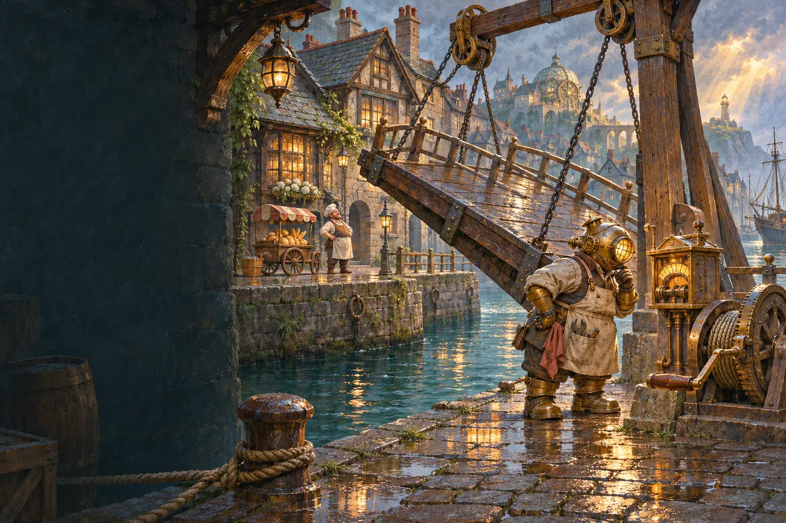

Read the adventure
Start with the opening scene. The guide gives you dialogue for both characters, what a player can learn from each check, and how to finish if the party tries something unexpected.
Download DM guide (PDF)
Your first session as Dungeon Master
The morning bread is waiting across the canal. The drawbridge is stuck open, and the brass bridgekeeper insists the signal says red. Your party can find out why.
Get the free adventureStart with the opening scene. The guide gives you dialogue for both characters, what a player can learn from each check, and how to finish if the party tries something unexpected.
Download DM guide (PDF)Use the one-page sheet for the scene order, DCs and initiative. Share the gridded map with the players when they reach the bridge.
Read through the bridge scene. Keep the table sheet and a pencil nearby. Ask the players to bring a level 1 character or choose one of Lantern Quay’s four ready-to-play characters.
Download the starter character sheets (PDF)